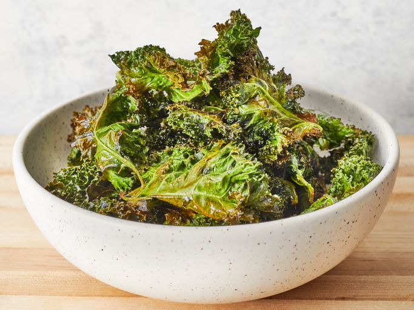

Kale Chips
Recipe source

Description by ChatGPT
Kale chips are a healthy snack made by baking kale leaves in the oven.
The leaves are tossed with olive oil, salt, pepper, and nutritional yeast flakes for flavor.
Once baked, the kale becomes crispy and crunchy, making a light and crunchy snack.
It's a simple and easy way to enjoy kale with a bit of seasoning.
Ingredients
- Bunch kale
- Olive oil
- Salt
- Pepper
- Nutrtional yeast flakes
Steps
- Preheat the oven to 150 degrees Celsius.
- Cut the kale so that you end up with leaves with the desired chip size.
- Properly rinse and dry the leaves.
- Drizzle the leaves with oil and mix.
- Spread the leaves evenly on a baking sheet.
- Sprinkle with salt and pepper.
- Bake for ~20 minutes. The kale chips are ready when the edges start to brown.
- Serve with nutritional yeast flakes.
Home